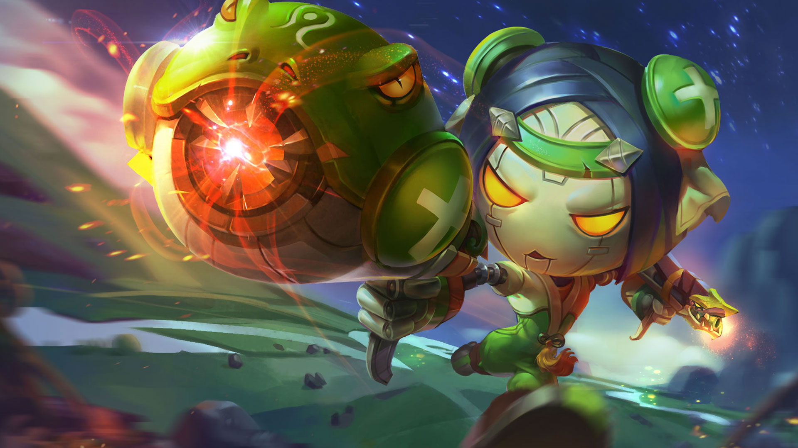
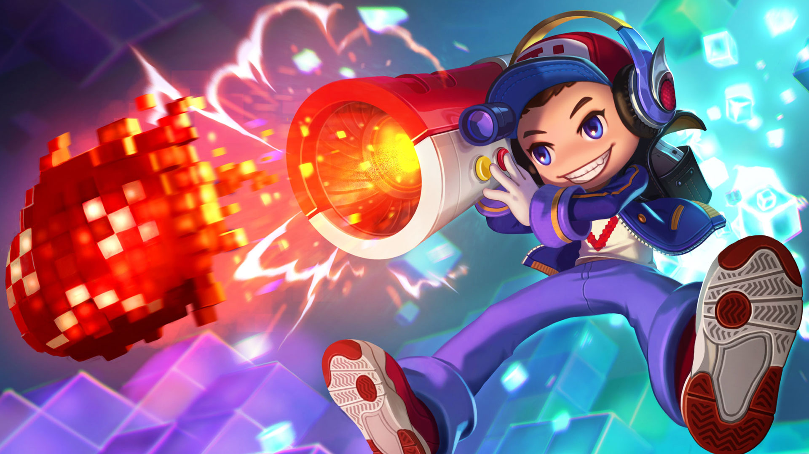

鲁班七号
鲁班七号是腾讯手游《王者荣耀》中的射手型英雄角色。
鲁班七号是鲁班大师的天才机关造物。
作为一个超远程射手，输出攻击能力自然十分不凡，强大的群体伤害，在团战之中更是无往不利。
英雄背景
-
鲁班大师的年龄？秘密！ 鲁班大师的身高？秘密！ 鲁班大师的性别？男！
- 鲁班大师的真实面目？秘密！
-
鲁班大师的来历？久远的应当追溯到稷下在废墟上重建之时！鲁班大师生平唯一的悔恨，就是让名为墨子的民工，抢先让古老的机关术重现世间！从那时起，鲁班大师就视其为生平唯一的宿敌！
- 这就是鲁班大师和他的天才机关造物鲁班七号，真正的面目！
英雄技能
-
火力压制（被动）:鲁班七号连续使用普通攻击时，第五次普通攻击会掏出机关枪进行扫射，扫射会造成3次伤害，对敌人英雄每次造成其最大生命6%物理伤害（每100点额外物理攻击提升1%），对小兵野怪防御塔造成120（+50%物理加成）点物理伤害；使用技能后鲁班七号下一次普通攻击变更为扫射
-
河豚手雷（1技能）:鲁班向指定位置投掷一枚河豚手雷，对范围内的敌人造成450/500/550/600/650/700（+75%物理加成）点物理伤害并减少其25%移动速度，持续2秒;
-
无敌鲨嘴炮（2技能）:鲁班向指定方向发射火箭炮击退身前敌人，命中英雄后造成400/450/500/550/600/650（+70%物理加成）点物理伤害，并附带目标已损生命5/6/7/8/9/10%法术伤害;
-
空中支援（大招）:鲁班召唤河豚飞艇向指定方向进行空中支援，支援持续14秒，河豚飞艇可照亮视野且每秒对范围内随机一个敌人投掷炸弹，炸弹会在0.75秒落下，对于目标范围内的敌人造成500/625/750（+75%物理加成）点物理伤害。
英雄关系
| 关系 |
英雄 |
| 最佳搭档1 |
太乙真人 |
| 最佳搭档2 |
牛魔王 |
| 压制英雄1 |
黄忠 |
| 压制英雄2 |
王昭君 |
| 被压制英雄1 |
兰陵王 |
| 被压制英雄2 |
李白 |
英雄照片


玩法分析
鲁班七号可以推荐的携带技能有“疾跑”和“闪现”等，常规是闪现和疾跑，注重输出可以利用狂暴。
携带闪现，在对线中优先学习技能河豚手雷，可以释放该技能范围减速敌人，用普攻不断攻击对手，出门装可选“匕首”或者“神速之靴”。如果缺少打野，鲁班可以作为替补打野。
鲁班七号的闪现技能是他逃生的必备神技，因为鲁班七号没有位移，也几乎没有硬控，无法完全限制对手的动作，极易被敌人包抄针对，闪现技能一定要在万分危急的时刻交出，对于残血敌人尽量选择用2技能来追杀，不要浪费闪现的机会。
鲁班七号的疾跑技能让他的移速变得更快，鲁班的普攻速度较快，并且其技能释放后会让其天赋技能瞬间释放，释放加速技能的鲁班，用减速技能限制敌方的移速，不断用普攻触发被动对敌人进行追击攻击，也是不错的选择。
二技能抢人头，强行杀人专用，对方残血只有一点时开瞄准好能干掉。